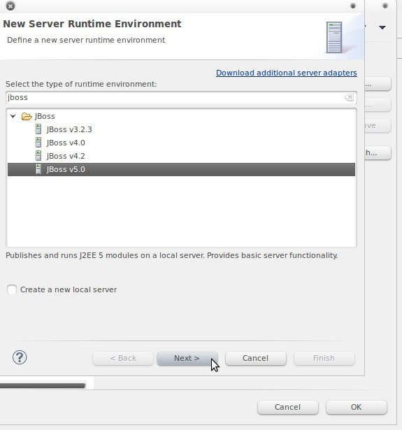

Configurar o eclipse usar as bibliotecas presentes no JBoss
(este guia descreve genericamente o processo -- deverá ajustar as opções para usar as versões mais recentes do software -- Eclipse Juno e JBoss 7.1
Para adicionar o JBoss como um servidor no eclipse
Escolha a tab window seguida de preferences
Em server - Runtime Enviroments escolha a opção para adicionar um novo server
Seleccione a versão JBoss 7.1 (ou outra, caso tenha instalado outra versão)

Como application server directory escolha o directório onde instalou o JBoss (por exemplo, . Caso padrão é:
C:\temp\jboss-as-7.1.1.Final
Usar as bibliotecas do servidor
Com o botão direito do rato sobre o projecto selectionar properties
Escolher Java Build Path, optar pela tab Libraries e seleccionar Add Library
Seleccionar Server Runtime
Escolher o Server Runtime JBoss anteriormente criado.
© Docentes de Sistemas Distribuídos,
Dep. Eng. Informática
,
Técnico Lisboa